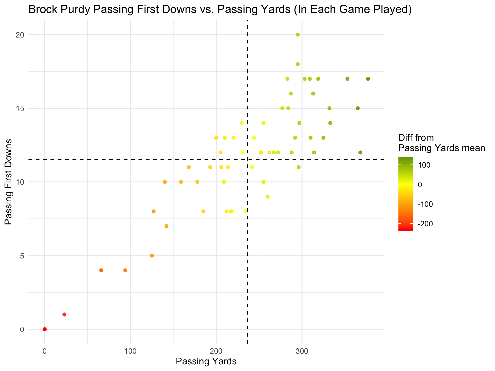
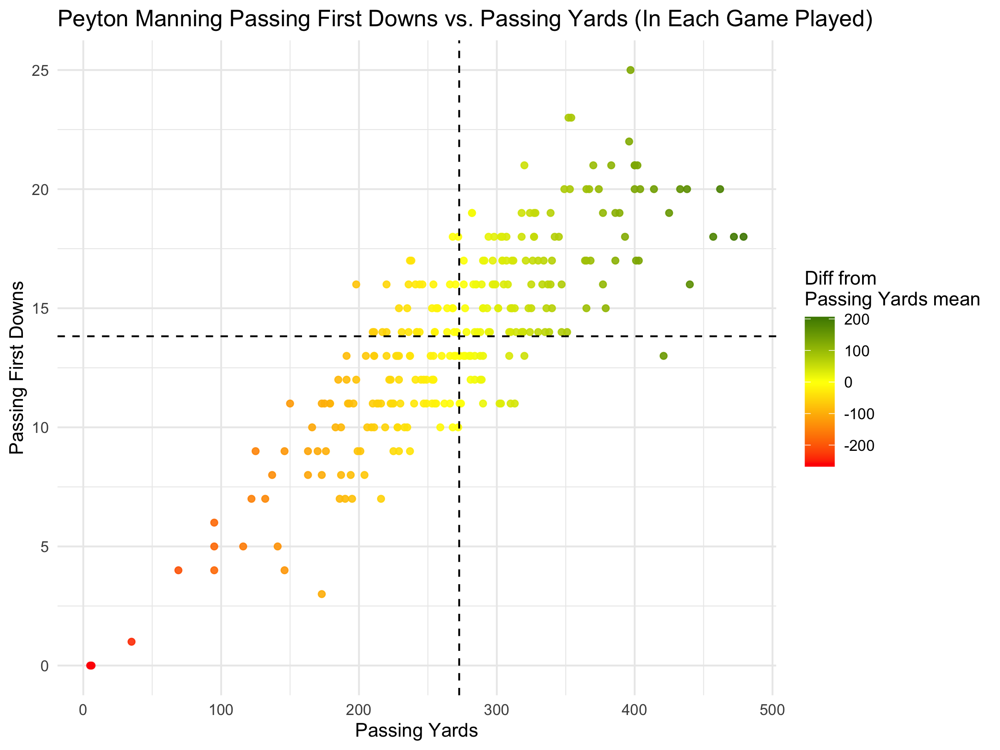
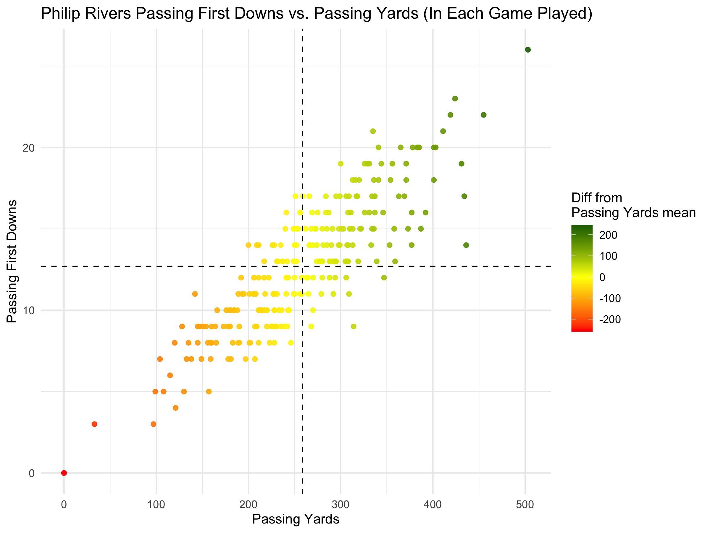

Three Quarterbacks
I'm going to list and visualise some extremely basic stats about three quarterbacks. The stats visualized will just be their passing yards against passing first downs in all career games. Expect to see an extremely linear relationshp between the two stats. Here are the three quarterbacks:
- Brock Purdy
- Peyton Manning
- Philip Rivers


